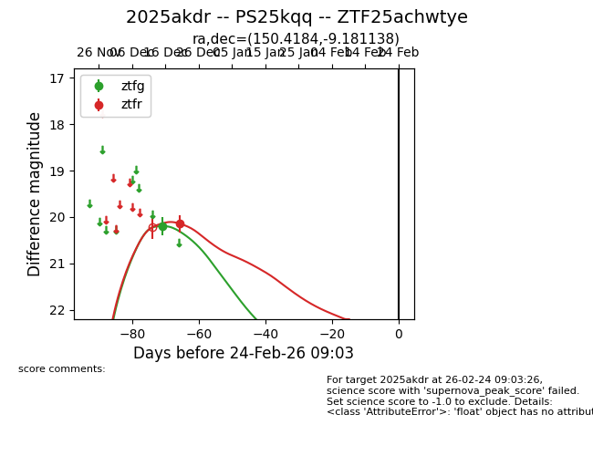
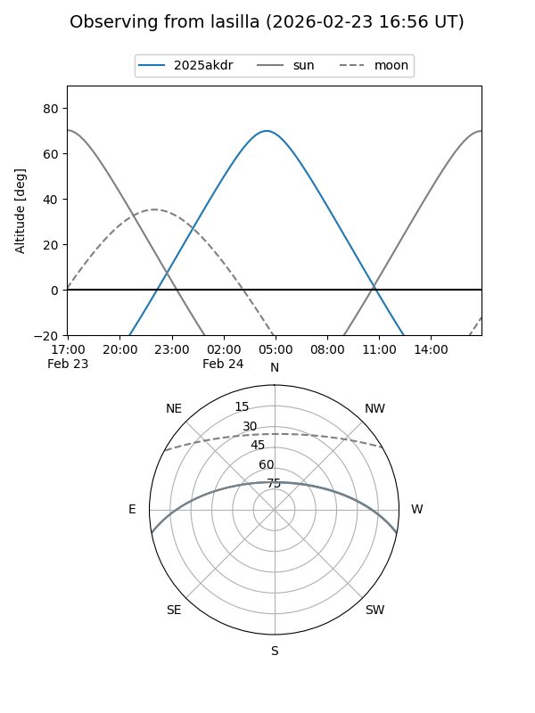
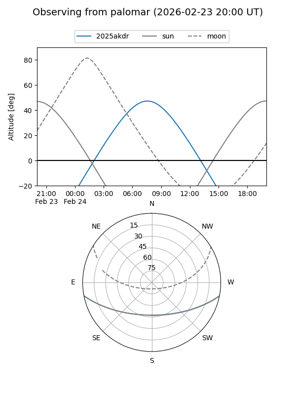

2025akdr
Target 2025akdr at 2026-01-09 12:49
Aliases and brokers:
FINK: link
Lasair: link
ALeRCE: link
TNS: link
YSE: link
alt names
ZTF25achwtye (ztf,fink_ztf)
2025akdr (tns,yse)
PS25kqq (panstarrs)
Coordinates:
equatorial (ra, dec) = 150.4184,-9.18114
equatorial (HMS+DMS) = 10:01:40.41,-09:10:52.10
galactic (l, b) = (248.3754,+35.14281)
Flags:
Photometry:
last ztfg=20.20, ztfr=20.14
1 ztfg, 1 ztfr detections
Lightcurve

Visibility


Additional plots